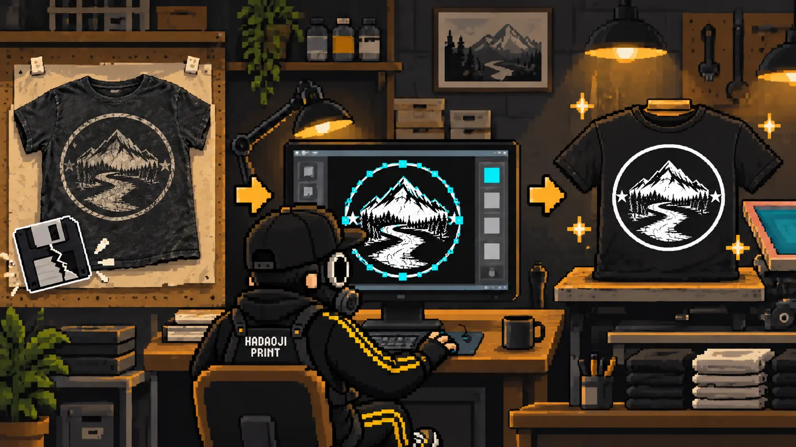
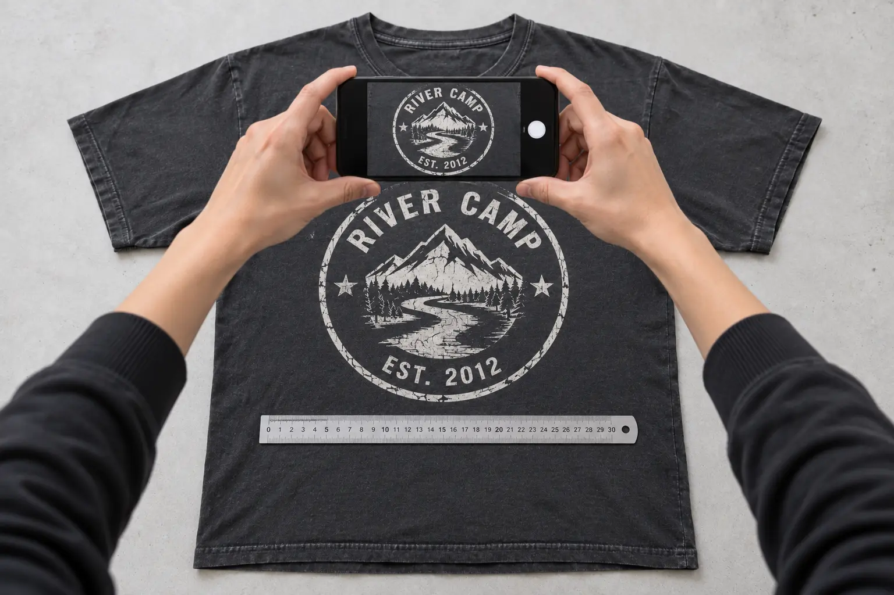
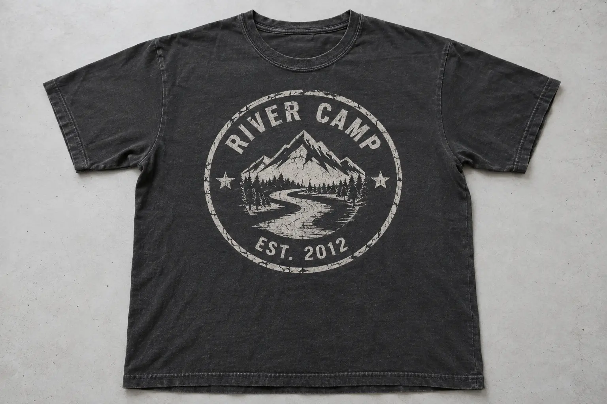
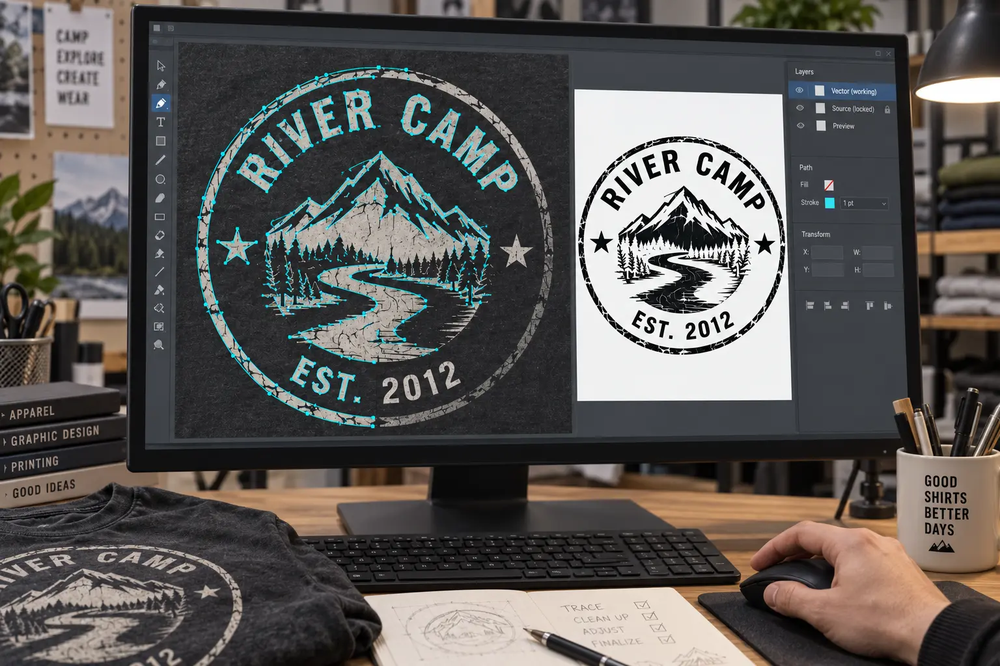
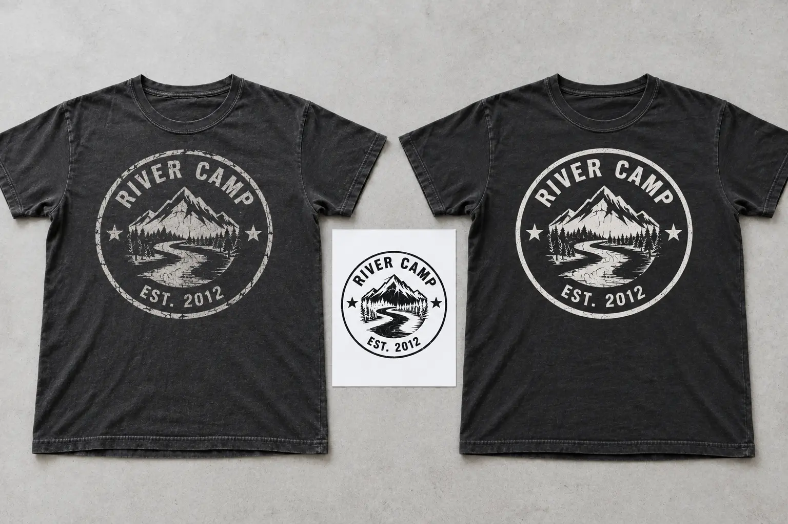

デザインデータがなくても、写真や現物から再製作できる場合があります
以前のプリント業者がなくなり、元のデザインデータが手元にない場合でも、プリント済みTシャツの現物や鮮明な写真があれば、ロゴや文字をトレースしてプリント用データへ作り直せることがあります。
ただし、写真の画質、プリントの劣化、絵柄の複雑さによって復元できる範囲は変わります。完全な複製を約束するものではなく、元の印象をできるだけ残しながら、再びプリントできる形へ整える作業です。

※掲載画像は内容を分かりやすく伝えるための再現イメージです。実在のお客様のデザインや個人情報は使用していません。
写真から復元しやすいデザイン・難しいデザイン
| 元の状態 | 復元の目安 | 確認するポイント |
|---|---|---|
| 単色の文字・ロゴ | 比較的復元しやすい | 輪郭、文字の形、配置、大きさが確認できるか |
| 数色のイラスト | 状態を見て判断 | 色の境界や細い線が判別できるか |
| 細密画・写真・グラデーション | 難しい場合がある | 元画像にない細部を正確には戻せない |
| ひび割れ・剥がれが多い | 補正方法を相談 | 当時のきれいな形へ戻すか、古着の風合いを残すか |
| 斜め・小さい・ぼけた写真のみ | 追加写真が必要 | 正面写真や細部写真を用意できるか |
特に書体が特定できない文字は、近い書体を探すか、一文字ずつ輪郭を描き直します。欠けて見えない部分は推測になるため、確認を重ねながら進めます。
復元相談で送ってほしい写真

Tシャツを平らに置き、プリント面とカメラをできるだけ平行にして撮影します。
かすれやつぶれがある部分は、近くから撮った写真もあると判断しやすくなります。
プリントの下に定規を置くか、横幅と縦幅を測ってお知らせください。
胸・背中・袖などの位置と、元のプリントバランスを確認します。
- 影や照明の反射がプリントに重ならないようにする
- スマホの加工やフィルターを使わず撮影する
- LINEなどで送る前の元画像を残しておく
- ウェアの品番やサイズが分かれば一緒に撮影する
写真からプリント用データへ整えるトレース工程

斜めから撮影された円や文字を、元の形に近づくよう調整します。
自動変換だけに頼らず、文字・線・図形の形を確認しながらトレースします。
プリントの劣化による欠けをどこまで戻すか、元の雰囲気を見ながら判断します。
希望サイズ、色数、プリント方法に合わせて線の太さやデータ形式を整えます。


自動トレースだけでは、ひび割れや生地の凹凸まで拾ってしまいます。どこが本来のデザインで、どこが劣化なのかを見分けながら整えることが大切です。
作業前に「どこまで同じにするか」を確認します
ひび割れやかすれを取り除き、線や文字をきれいな状態へ整えます。
かすれや欠けもデザインの一部として、見た目の印象を残します。
ロゴの形だけでなく、プリント色、実寸、位置、使用するTシャツも確認します。元のウェアが廃番の場合は、厚み・素材・形が近い代替品をご案内します。
復元データを確認してから、新しいTシャツへプリントします

トレースが終わったら、元写真と復元データを並べて確認します。文字、図形、線の太さ、大きさに問題がなければ、使用するウェアと加工方法を決めてプリントへ進みます。
復元したデザインデータは、Tシャツの再製作だけに使うものではありません。用途に合わせてサイズやデータ形式を整えれば、InstagramなどSNSのアイコン、名刺、ショップカード、ステッカー、看板など、さまざまな制作物へ展開できます。
一度きりのプリント用データではなく、同じデザインをさまざまな場面で使い続けるための大切なデータとして残せます。
トレース料金と納期はデザインの状態で変わります
トレース作業の料金は、文字や線の量、色数、欠けた部分の補正、確認回数などによって変わるため個別見積もりです。写真を確認したうえで、必要な作業と料金をご案内し、了承後に作業を始めます。
ウェア代、プリント代、送料はトレース料金とは別に計算します。枚数、プリント位置、希望納期が分かると、再製作まで含めた見積もりを出しやすくなります。
他社ロゴ・キャラクター・販売用デザインは権利確認が必要です
会社・チーム・お店など、ご自身が使用する権利を持つデザインか確認してください。第三者のブランドロゴ、キャラクター、イラストなどは、許可を確認できない場合は製作をお受けできません。
また、写真からの復元では、判別できない部分や当時の正確な色を完全に戻せない場合があります。元のデータと完全に同一ではなく、写真や現物を手がかりに再構成したデータになることをご理解ください。
写真からのTシャツ復元でよくある質問
デザインデータがなくても同じTシャツを作れますか？
プリント済みTシャツの現物や鮮明な写真があれば、ロゴや文字をトレースして再製作できる場合があります。状態によっては完全に同一にならないことがあります。
復元のためにどんな写真が必要ですか？
プリント全体の正面写真、細部のアップ、プリント幅が分かる定規入り写真、Tシャツ全体の写真があると確認しやすくなります。
トレース料金はいくらですか？
線や文字の量、欠けた部分の補正、色数などで変わるため個別見積もりです。画像を確認してから作業内容と料金をご案内します。
同じTシャツの品番が分からなくても大丈夫ですか？
生地の厚み、素材、色、シルエットなどを確認し、近いウェアをご提案できます。タグが残っていれば、タグの写真もお送りください。
MISSION COMPLETE!
データがなくても、残っているTシャツを見せてください
写真や現物から復元できる状態かを確認し、再び作るための方法を一緒に考えます。
写真からの復元を相談 ▶裏公式LINEで写真を送る▶実際のウェアプリント相談とデータ作成経験をもとに解説しています。掲載画像はすべて説明用に作成した架空の再現イメージで、実在のお客様のデザインや個人情報は使用していません。最終更新：2026年9月9日 運営者・編集方針